Open PDF Editor
User Guide
A free, open-source PDF editor for the Mac.
This guide is a PDF, so you can use everything it describes on it: the bookmarks in the sidebar take you to each chapter, and Edit › Find › Find… (⌘F) searches it.
Open a PDF in any of these ways:
When no document is open, the welcome window appears, with New PDF, Open… and Guide. File › New (⌘N) makes a new PDF with one blank page (Letter size in the US and Canada, A4 elsewhere).
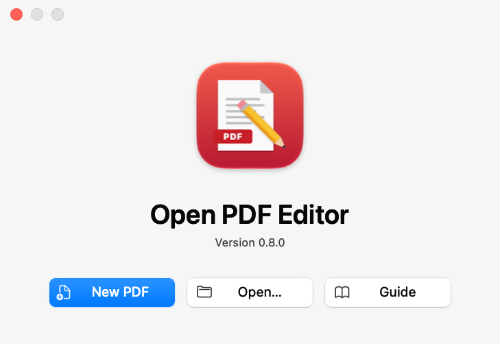
Each document has a window with three parts:
The toolbar has buttons for moving between pages, the page number, zoom, the page layout, turning pages, editing (Edit), the markup tools and searching. Change which buttons it shows with View › Customize Toolbar…, or hide it with View › Show Toolbar (⌥⌘T).
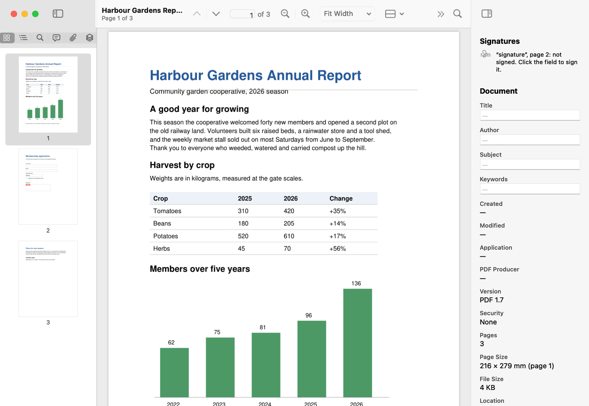
Documents open as tabs in one window; drag a tab out to give a document a window of its own. Window › Merge All Windows gathers every document window into tabs, and Window › Show Next Tab (⌃⇥) and Show Previous Tab (⌃⇧⇥) move between them. View › Enter Full Screen (⌃⌘F) gives a document the whole screen.
View › Zoom In (⌘+), Zoom Out (⌘−), Actual Size (⌘0), Fit Width (⌘8) and Fit Page (⌘9) set the size; you can also pinch on a trackpad. Pages stay sharp at any zoom.
Choose how pages are laid out with View › Single Page, Single Page Continuous, Two Pages or Two Pages Continuous. With two pages side by side, View › Show Cover Page Separately puts the first page on its own, like a book’s cover.
View › Rotate View Left (⌥⌘L) and Rotate View Right (⌥⌘R) turn only your view of the pages. To turn the pages themselves, see Working with pages.
Type in the search field in the toolbar, or choose Edit › Find › Find… (⌘F). Every match is highlighted and listed in the sidebar’s search results, with the words around it. Edit › Find › Find Next (⌘G) and Find Previous (⇧⌘G) step through them, and Use Selection for Find (⌘E) searches for the selected text. Match Case and Whole Words, in the same menu, narrow the search.
Scanned pages have no text to find until it is recognised: see Recognising text in scans.
With the Select tool (the usual tool), drag across text to select it, double-click a word or triple-click a paragraph, then choose Edit › Copy (⌘C). Edit › Select All (⌘A) selects the page’s text. Typing over selected text edits it: see Editing text and images.
Choose File › Print… (⌘P) for the Mac’s print panel, and File › Page Setup… (⇧⌘P) for paper size. Comments are printed as they appear on the page.
A document that needs a password to open asks for it before showing anything. A document whose owner has limited what can be done with it (printing, copying, editing and so on) opens normally, with a notice under the toolbar naming what isn’t allowed: see Passwords and permissions.
Comments (also called annotations) sit on top of a page without changing what is printed underneath. Other PDF apps, such as Preview and Acrobat, show them too.
Show the markup toolbar with View › Show Markup Toolbar (⇧⌘A) or the toolbar’s markup button. It has every tool, a colour and a line width; each tool remembers its own. The same tools are in the Tools menu:
| Tool | What it does | Shortcut |
|---|---|---|
| Select | Selects text and comments; the usual tool. | ⌃⌘1 |
| Highlight | Drag across text to highlight it. | ⌃⌘H |
| Underline | Drag across text to underline it. | ⌃⌘U |
| Strikethrough | Drag across text to strike it through. | |
| Note | Click to add a note, shown as an icon you open. | ⌃⌘N |
| Text Box | Drag out a box of text shown on the page. | ⌃⌘T |
| Rectangle, Oval | Drag out a shape. | ⌃⌘R, ⌃⌘O |
| Line, Arrow | Drag from one end to the other. | ⌃⌘L, ⌃⌘A |
| Draw | Draw freehand with the mouse or trackpad. | ⌃⌘D |
| Stamp | Click to place a stamp such as Approved, Draft, Confidential or For Comment (choose which in the markup toolbar). | ⌃⌘M |
| Signature | Click to place your handwritten signature (see Signatures). | ⌃⌘G |
| Redact | Marks text or areas for removal (see Redaction). | ⌃⌘X |
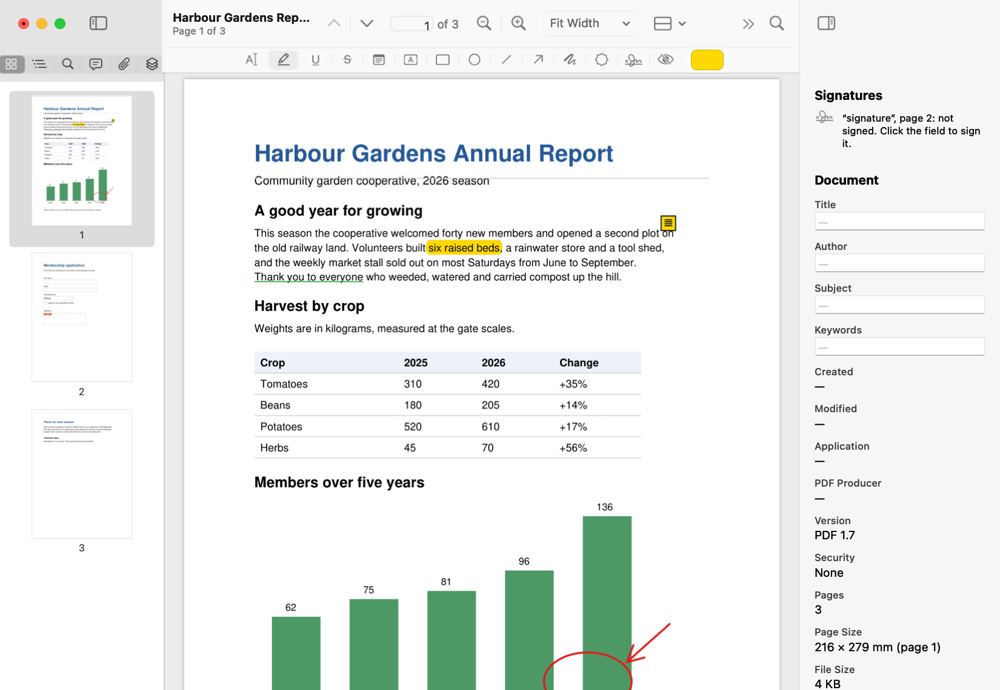
Click a comment with the Select tool to select it. Drag it to move it, and drag its handles to resize it. The inspector shows its settings: colour, fill, opacity, line width, text size and its text; each change can be undone. Press Delete, or choose Edit › Delete, to remove the selected comment.
View › Comments (⌥⌘4) lists every comment in the document by page, with its author, its replies and its review status. Click one to go to it. The menus at the top show only comments of one type, by one author, or with one status.
Select a comment in the list and click Reply to answer it, or choose a status from Status: Accepted, Rejected, Cancelled, Completed or None. Replies and statuses are stored as Acrobat stores them, so reviewers using other apps see them too.
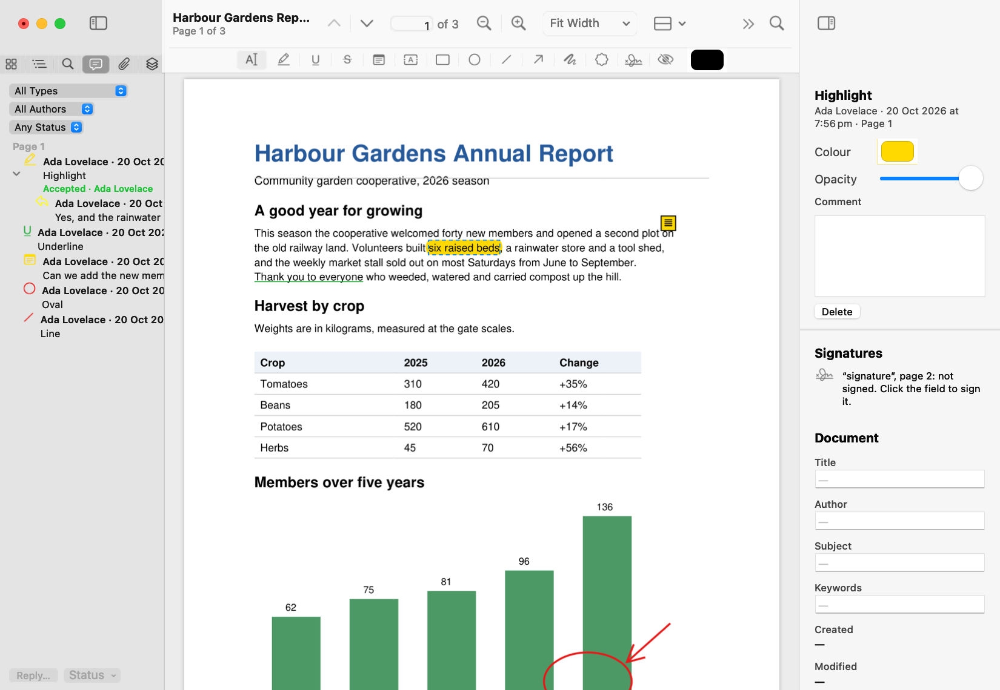
Tools › Flatten Annotations… draws every comment into the pages, so it can no longer be changed or removed, and removes replies. You can undo it until you close the document.
Page commands are in the Pages menu, and in the menu you get by Control-clicking thumbnails. They act on the pages selected in the thumbnails, or on the current page when none are selected. Select several thumbnails with ⌘-click or ⇧-click.
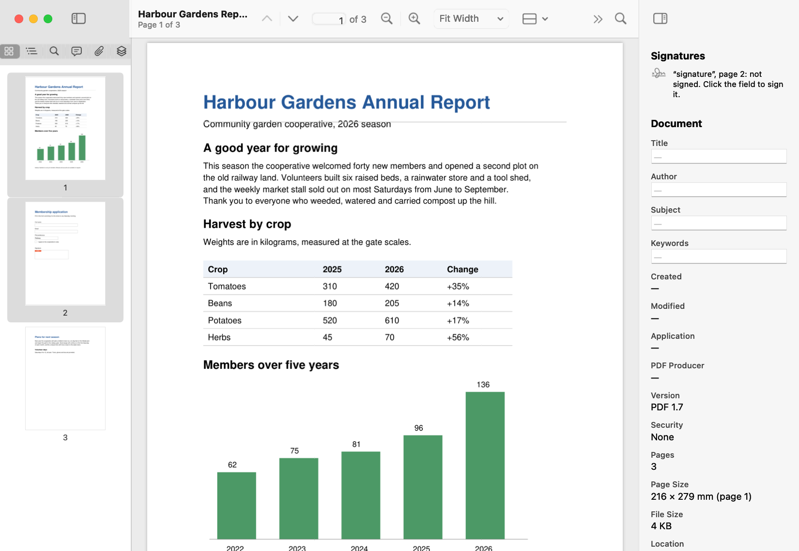
Choose Pages › Crop (⌃⌘K), then drag over a page to the area you want to keep. Press Esc to stop cropping. Cropping hides the rest of the page rather than deleting it, and can be undone.
Neither changes the document itself. The new PDFs don’t have its password.
Pages › Add Headers & Footers… puts text at the top or bottom of pages, on the left, in the centre or on the right. In the text, <<page>> becomes the page number, <<pages>> the number of pages and <<date>> today’s date. Pages › Add Page Numbers… is a quick way to number pages, and Pages › Add Watermark… puts text such as DRAFT across pages, at an angle and opacity you choose.
They can be added to all pages or some, and taken off again with Pages › Remove Headers & Footers and Pages › Remove Watermarks, which remove only what this app added.
With the Select tool, click a field to fill it in. Type into text fields, and press Tab to go on to the next field. Click checkboxes and radio buttons to tick them, and choose from dropdowns and lists. View › Highlight Form Fields tints every field you can fill in, so none are missed.
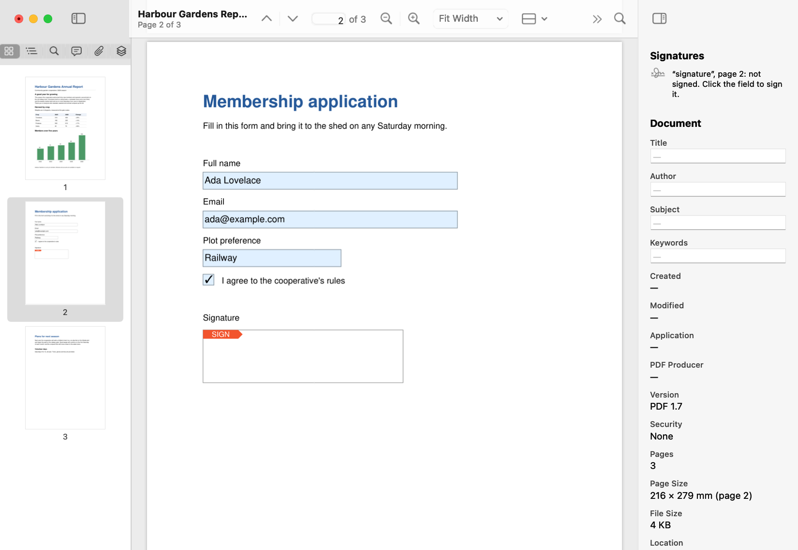
Choose Forms › Edit Fields (⌥⌘F) to work on the form itself. A bar of field tools appears, and the same tools are in the Forms menu: Select, Text Field, Checkbox, Radio Button, Dropdown, List Box and Signature Field. Click or drag on a page to add a field. Select a field to move it, resize it or delete it, and set its name, tooltip, choices and options in the inspector.
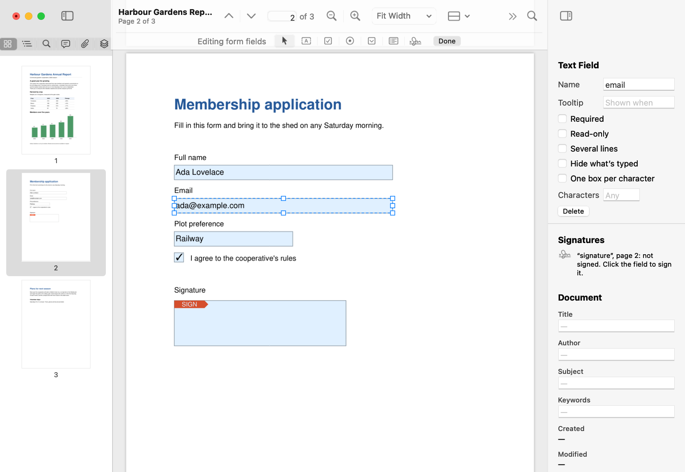
Forms › Flatten Form… makes the values you filled in part of the pages, so they can no longer be changed and look the same everywhere.
Editing a PDF’s text works like a word processor:
The paragraph re-wraps in its box as you type, keeping the document’s own font where it has the letters you use; otherwise a matching Mac font is embedded, with just the letters needed. Lines you don’t change stay exactly as they were. Click away from the paragraph to finish; the change is one step you can undo.
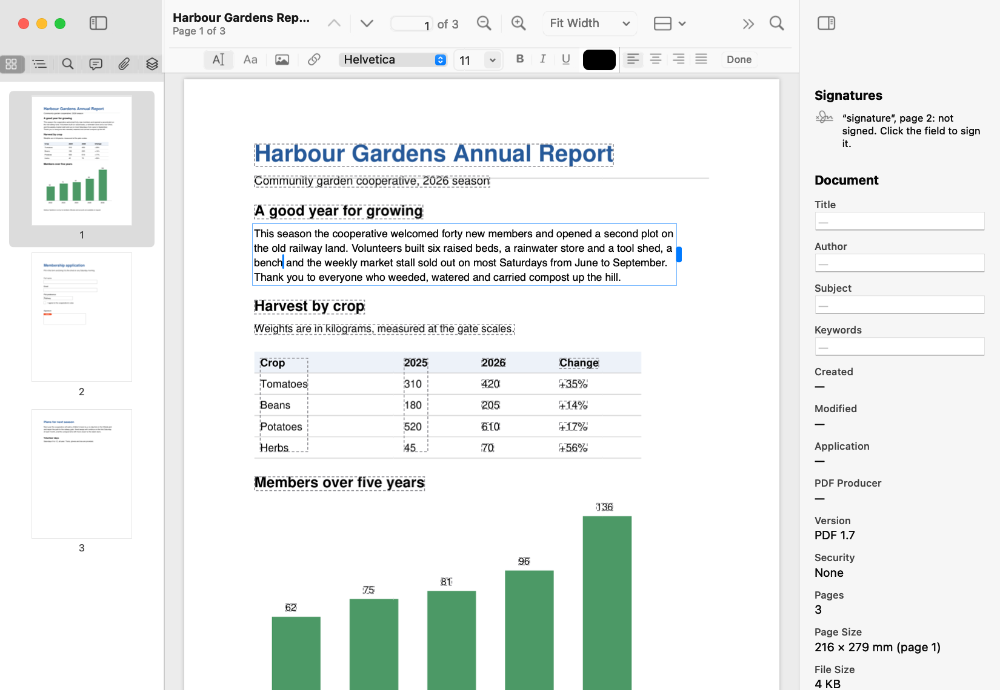
Typing into text turns on Edit › Edit Content (⌥⌘E) for you; you can also turn it on yourself, or click the toolbar’s Edit button, or Control-click text and choose Edit Text. Its bar has four tools and Done:
While you edit text, the formatting bar sets the font, size, bold, italic, underline, colour and alignment. The Format menu does the same: Format › Font › Show Fonts (⌘T), Bold (⌘B), Italic (⌘I), Underline (⌘U), Bigger, Smaller and Show Colors (⇧⌘C); Format › Text › Align Left (⌘{), Center (⌘|), Justify and Align Right (⌘}).
Drag the grip on the right of the box you are editing to change the width it wraps at. Text doesn’t flow from one paragraph into the next: if a paragraph grows into what’s below it, its box turns orange and says so.
Select an image with the Edit tool to move or resize it (hold ⇧ while dragging a corner to keep its proportions), replace it with another file from the inspector, or delete it. Select a link to move or resize it, or choose Change Target… in the inspector.
The inspector’s Document section (View › Document Info, ⌥⌘I) shows the document’s title, author, subject and keywords, which you can change, and its dates, producer, version, security, pages, page size and file size. File › Show in Finder shows the file.
Redaction removes content for good: the text, pictures and drawings under a mark are deleted from the file, not just covered.
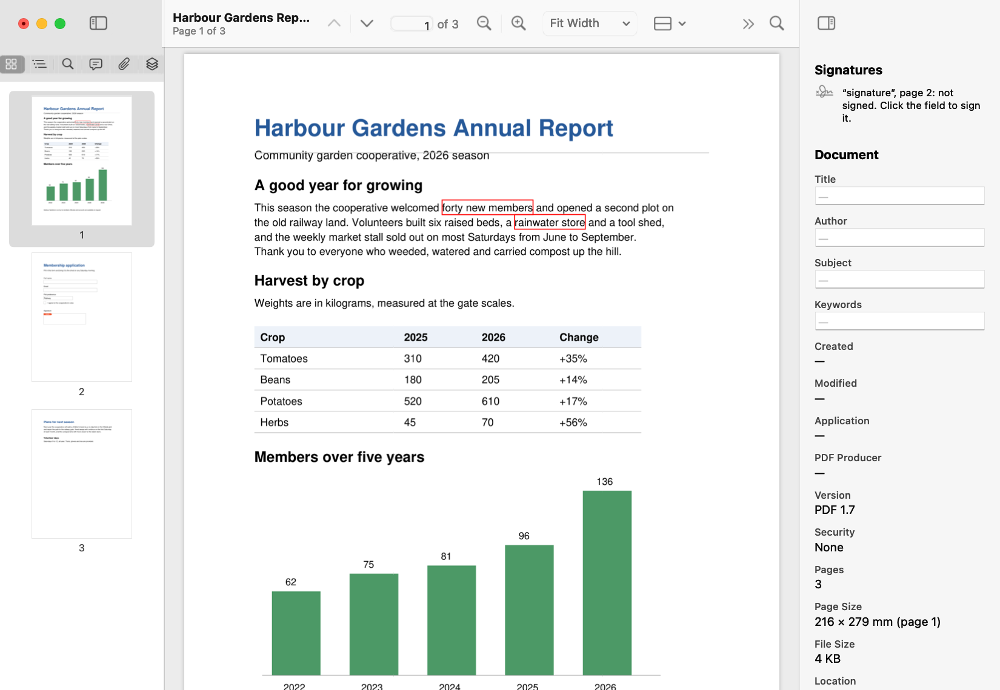
Applying removes everything under the marks (text, image pixels, line art, links, comments with their replies, and form fields with their values) and draws black boxes in their place. It also removes hidden leftovers that could give the content away, writes the document again and saves it. Earlier versions of the file are deleted too unless you untick the box.
Choose File › Security… to protect a document:
The document is encrypted with 256-bit AES. Applying writes the document again (undo history is cleared), and a signed document’s signatures are no longer valid.
When you open a document whose owner has limited what can be done, a notice under the toolbar says what isn’t allowed, and those commands are turned off. If you have the owner password, click Enter Owner Password… in the notice for full access.
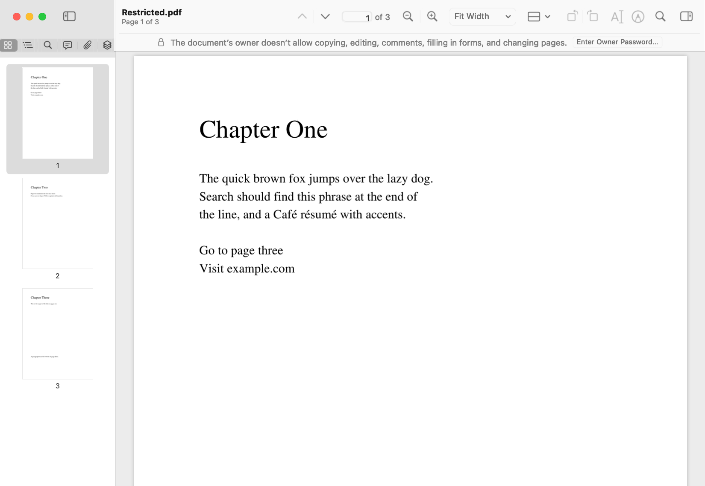
Choose Tools › Signatures… to draw your signature with the mouse or trackpad, or to import a picture of it. Your signatures are kept in your login keychain. Then choose the Signature tool (⌃⌘G, or in the markup toolbar) and click where it should go; it is placed as a stamp you can move and resize.
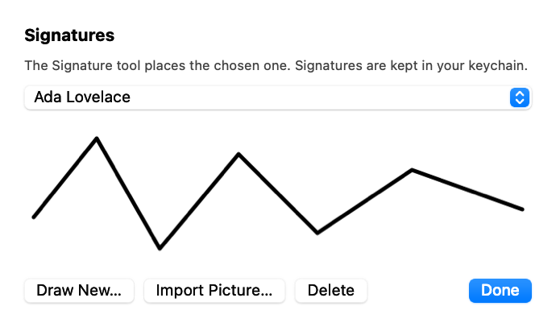
A digital signature proves who signed and that the document hasn’t changed since. To sign, click an empty signature field. Choose a certificate from your keychain, and optionally a reason, a location and your handwritten signature to show in the field. The document, with your changes, is signed and saved. The Keychain may ask to let the app use the certificate’s key.
Signing needs a certificate with its private key in your keychain, such as a .p12 file from your organisation or a certificate authority, added with Keychain Access.
The inspector’s Signatures section lists each signature field: who signed and when (by the signer’s clock), whether the document has changed since, and whether the certificate is trusted, self-signed, untrusted, expired or revoked. Certificates are checked against the ones on your Mac; turn on Check certificates online in Settings to fetch missing certificates and check for revocation.
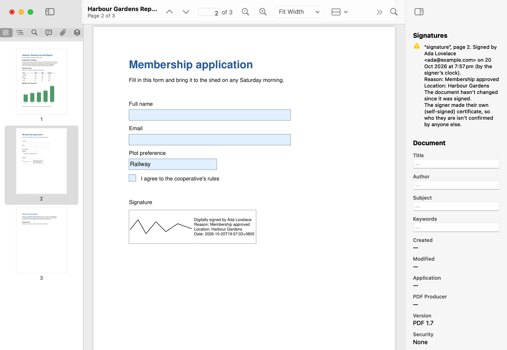
A scanned page is a picture: its words can’t be found, selected or copied. When the page you are on is a scan, a notice under the toolbar says so.
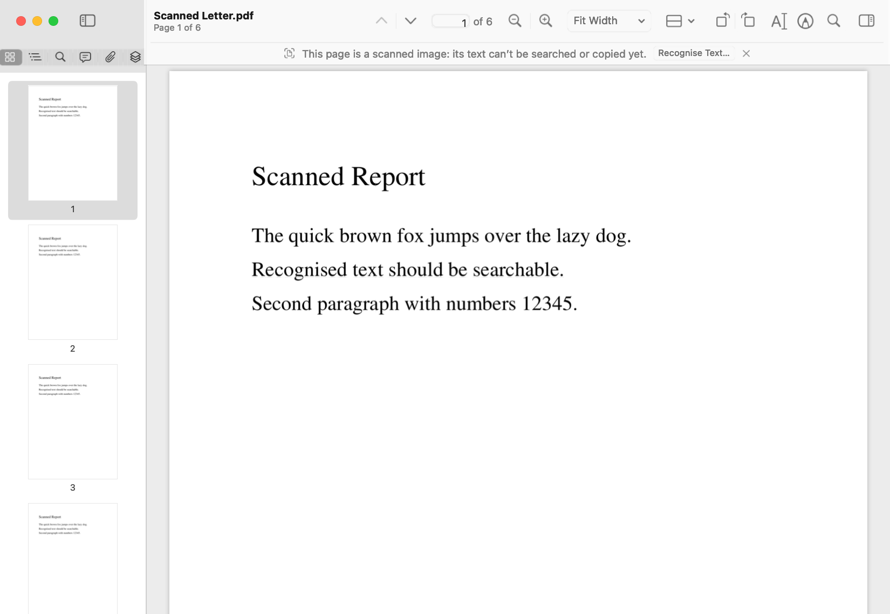
Choose Tools › Recognise Text…, or click Recognise Text… in the notice. Choose which pages to read:
The language is worked out automatically, or you can choose one. Recognition happens on your Mac with Apple’s text recognition: nothing is sent anywhere. A progress bar shows how far it has got, and you can cancel.
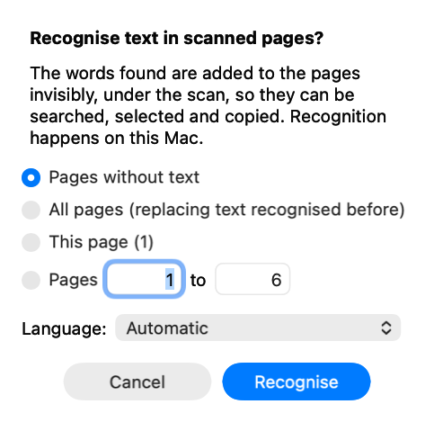
The words found are added to the pages invisibly, under the scan, so the pages look the same but their text can be found, selected and copied, in this app and others. It is one step you can undo. Recognising again replaces the earlier text rather than adding to it, and words the page already has as text aren’t added twice.
Choose File › Export… to save the document in another format. Choose the format and the pages (all, this page, or a range) under the save panel:
| Format | What you get |
|---|---|
| Word Document | Text, pictures and simple layout, to edit in Word or Pages. Recognised text, and any other invisible text, comes through as ordinary text. |
| Web Page | One HTML file with the text and pictures, laid out as on the pages. |
| Plain Text | Just the text, in reading order. |
| PNG Images, JPEG Images | A picture of each page, at 72 to 600 dots per inch; JPEG with a quality you choose. Several pages go into a new folder named like the file you chose. |
| TIFF Image | One image file with a page for each page. |
What’s exported is the document as it is now, including changes you haven’t saved. Exports of recognised scans to Word and web pages have the text rather than a picture of it. Export isn’t available when a document’s owner doesn’t allow copying.
Saving keeps the original file exactly as it was and adds your changes to its end. Digital signatures stay valid, other apps read the changes, and nothing you didn’t change is rewritten. (Redaction and security changes are the exceptions: they write the whole document again.)
By default, changes are saved when you choose File › Save (⌘S), and closing a changed document asks first. File › Save As… (⇧⌘S) saves a copy under another name, and File › Revert to Saved goes back to the last saved version.
Turn on Save changes automatically in Settings to have documents save themselves as you work, as Preview does. The File menu then has Duplicate (⇧⌘S), Rename…, Move To… and Revert To, which shows earlier versions of the document to go back to.
Edit › Undo (⌘Z) and Edit › Redo (⇧⌘Z) work for every change: comments, pages, forms, editing, stamps and recognised text. Undo keeps working after you save, until you close the document. A few changes say first that they can’t be undone: applying redactions, changing security and signing.
Choose Open PDF Editor › Settings… (⌘,). Each setting is a feature that is off until you turn it on, because it does something you might not expect, or gives a harmful file more of the app to work with.
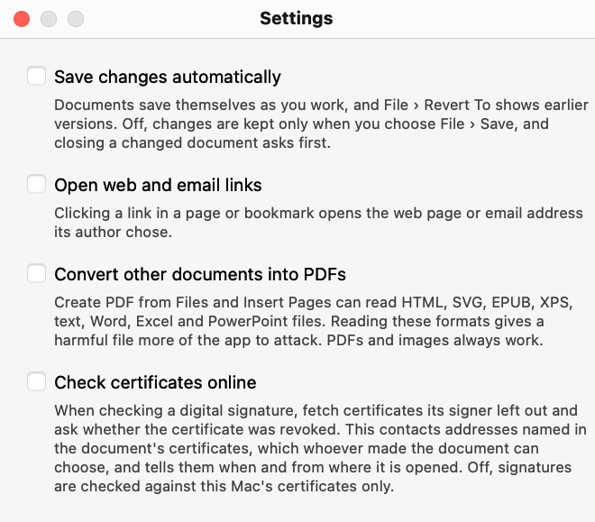
| Setting | When it’s on |
|---|---|
| Save changes automatically | Documents save themselves as you work, with earlier versions in File › Revert To. Off, changes are kept only when you choose File › Save. |
| Open web and email links | Clicking a link in a page or bookmark opens the web page or email address its author chose. Off, only links within the document work. |
| Convert other documents into PDFs | Create PDF from Files and Insert Pages can read HTML, SVG, EPUB, XPS, text, Word, Excel and PowerPoint files. PDFs and images always work. |
| Check certificates online | Checking a digital signature fetches certificates its signer left out and asks whether the certificate was revoked. This contacts addresses named in the document’s certificates. |
⌘ is Command, ⌥ Option, ⇧ Shift and ⌃ Control.
| Shortcut | Command |
|---|---|
| ⌘N | File › New |
| ⌘O | File › Open… |
| ⌘W | File › Close |
| ⌘S | File › Save |
| ⇧⌘S | File › Save As… (or Duplicate when saving automatically) |
| ⌥⌘N | File › Create PDF from Files… |
| ⌘P, ⇧⌘P | File › Print…, Page Setup… |
| ⌘Z, ⇧⌘Z | Edit › Undo, Redo |
| ⌥⌘E | Edit › Edit Content |
| ⌘F | Edit › Find › Find… |
| ⌘G, ⇧⌘G | Find Next, Find Previous |
| ⌘E | Use Selection for Find |
| ⌘0, ⌘8, ⌘9 | View › Actual Size, Fit Width, Fit Page |
| ⌘+, ⌘− | View › Zoom In, Zoom Out |
| ⌥⌘L, ⌥⌘R | View › Rotate View Left, Rotate View Right |
| ⌃⌘S | View › Show Sidebar |
| ⌥⌘1 to ⌥⌘6 | View › Thumbnails, Outline, Search Results, Comments, Attachments, Layers |
| ⌥⌘I | View › Document Info |
| ⇧⌘A | View › Show Markup Toolbar |
| ⌥⌘T | View › Show Toolbar |
| ⌃⌘F | View › Enter Full Screen |
| ⌥⌘↑, ⌥⌘↓ | Go › Previous Page, Next Page |
| Home, End | Go › First Page, Last Page |
| ⌥⌘G | Go › Go to Page… |
| ⌘[, ⌘] | Go › Back, Forward |
| ⌘L, ⌘R | Pages › Rotate Left, Rotate Right |
| ⌃⌘K | Pages › Crop |
| ⌃⌘1 | Tools › Select |
| ⌃⌘H, ⌃⌘U | Tools › Highlight, Underline |
| ⌃⌘N, ⌃⌘T | Tools › Note, Text Box |
| ⌃⌘R, ⌃⌘O | Tools › Rectangle, Oval |
| ⌃⌘L, ⌃⌘A | Tools › Line, Arrow |
| ⌃⌘D, ⌃⌘M | Tools › Draw, Stamp |
| ⌃⌘G, ⌃⌘X | Tools › Signature, Redact |
| ⌥⌘F | Forms › Edit Fields |
| ⌘T, ⇧⌘C | Format › Font › Show Fonts, Show Colors |
| ⌘B, ⌘I, ⌘U | Format › Font › Bold, Italic, Underline |
| ⌘{, ⌘|, ⌘} | Format › Text › Align Left, Center, Align Right |
| ⌃⇥, ⌃⇧⇥ | Window › Show Next Tab, Show Previous Tab |
| ⌘, | Open PDF Editor › Settings… |
| ⌘? | Help › Open PDF Editor Guide |
Open PDF Editor has no accounts and sends nothing about you or your documents anywhere. It only uses the network when you ask it to:
Text recognition and everything else happen on your Mac. Scripts in PDFs never run.
The app never checks for updates by itself. Choose Open PDF Editor › Check for Updates… when you want to; updates are signed, and installed only when you agree. Open PDF Editor › About Open PDF Editor shows the version you have.
Open PDF Editor is free software under the GNU Affero General Public License, version 3. Its source code is on GitHub.